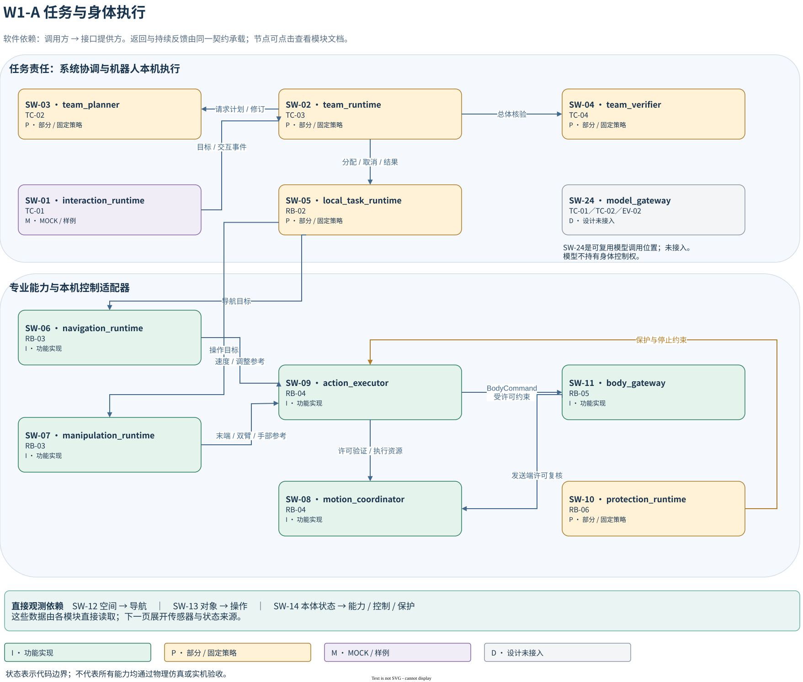
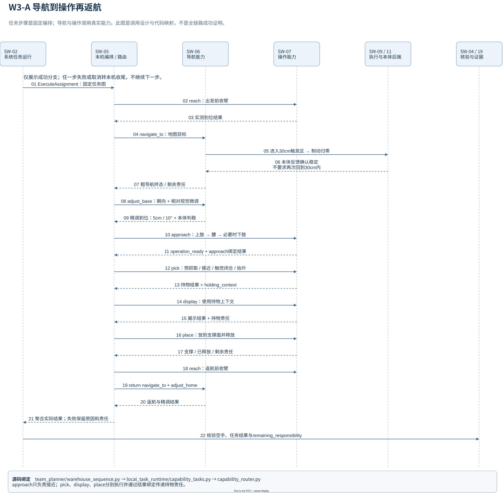

FACRI 平台并非单一庞大的 Python 脚本或固定构型的机器人控制器，而是一套跨越语义推理、分布式任务编排、硬实时运动控制与纯接触物理仿真的分层系统。整套代码库按职责边界清晰划分为四个正交平面，使上层人工智能决策波动无法穿透至毫秒级物理执行层。

四平面正交分层架构
| 架构平面 | 核心代码目录与进程 | 调度节拍与隔离边界 | 主要职责边界 |
|---|---|---|---|
| 表现与交互平面 | apps/collaboration_platform/、apps/model_gateway/ |
浏览器前端 Three.js 帧率驱动；网关 :18080
异步配额队列 |
只读 3D 渲染、17+ 个操作/诊断视图、模型调用并发上限与鉴权守门 |
| 系统编排与 RSI 平面 | src/system_app/（ROS 2
节点、StarFleetBus、交互网关） |
Python 运行时，强约束 0.0002 s GIL 调度基线 |
语义澄清、DAG 任务编译、跨机互锁调度、工装联动与离线进化验证 |
| 单机多进程与算法平面 | src/robot_app/、src/embodied_core/（4+1
进程） |
C++20 进程独立绑核：200 Hz 控制 /
50 Hz 安全 / 10–20 Hz 规划与感知 |
EmbodimentSpec 能力合成、SLAM
定位、双足步态/MPC/上肢逆解、单机局部保护 |
| 硬件与仿真执行平面 | src/robot_app/backends/、src/facility_hal/ |
零拷贝共享内存 SalWire v2、32 B UDP
安全脉冲、HTTP WAL |
SIM_SAL 物理桥接、五型真机 REAL_HAL
插件、工业工装与机场设备网关 |

五大核心系统不变量
为确保系统在 Smart Factory 四机连续产线与
C919 Ground Turnaround
九机异构保障两种截然不同的场景中稳定运行，所有子系统在代码评审与运行时均严格维护以下五项架构不变量：
1. 跨时钟域隔离与严格新鲜度验证
物理仿真器产生的是可变步长或降速后的
sim_time_ns，而宿主机硬件保护与交互进程依赖单调递增的
host_monotonic_ns。系统在
src/embodied_core/include/embodied_core/sal_wire.hpp 与
src/embodied_core/include/embodied_core/shm_ipc.hpp
中显式并列携带两个时间域与单调会话代际号
epoch，严禁将推理完成时间回填为传感器源捕获时间；一旦发生跨时钟混用、帧序倒退或
epoch
跳变，下游感知跟踪与控制执行器立即重置状态并拒绝过期数据。
2. 固定线协议消除跨层语义耦合
无论是 31 自由度双足人形、32
自由度四轮转向复合臂，还是 5
自由度机场牵引车，所有机器人经由同一份定长 SalWire v2
协议穿越进程与硬件边界：SalSampleWire 固定
1472 B、SalCommandWire 固定
2052 B、SalLidarWire 固定
96068 B（支持
kMaxDofs = 48、kMaxLidarPoints = 6000），且末尾强制校验
CRC32
IEEE。底盘、上肢、特殊机构与夹爪指令全数使用通用槽位索引与标志位传递，绝对禁止将具体场景逻辑（如工位号或货舱门命名）硬编码进物理执行通道。
3. 能力边界三层单调收敛
单台机器人的实际可调度能力由 L1 ∧ HAL ∧ L2
交集规则严格决定：静态构型档案
configs/robots/*/description.yaml
声明物理本体结构（L1），运行时由
IHalDriver::query_hardware_caps()
实测硬件外设传感器到位情况（HAL），最后叠加场景清单配置的策略开关（L2）。下游只能收窄而绝不允许越权扩展上游未声明的自由度或力控权限。
4. 纯接触物理可信与手动停止主权
产线抓取与插拔全面基于 MuJoCo
纯刚体接触、手腕六维力导纳控制与防滑检验，彻底废除隐藏式吸附脚本。同时遵循工程治理裁定：废除早期
RTF 0.5
自动停机门禁，物理仿真连续运行过程仅可由操作员显式手动触发停机，单台机器人触发
LOCAL_HOLD 时严格限定于本机范围，不引发全编队误急停（详见
运行时基线与冻结治权）。
5. 透明失败留痕与受约束进化边界
系统在任务执行流中强制核验观测来源（SIM_SAL、REAL_HAL
等）与执行来源一致，所有步骤进展与异常通过无锁
evidence_ring*.shm 及 EvidenceStore
持久化记录，工装设备网关通过 AckJournal
预写日志防重启丢失；自我进化组件 ReflectionEngine 与
EvolutionManager
仅在离线实验沙箱内分析真实失败包并验证候选补丁，绝不绕过验证门禁热改在线运行态规则。

延伸阅读
- 查看仓库目录结构、进程二进制文件与模块对应清单：参阅 代码目录与进程拓扑地图。
- 检索 84 份 ROS 2 接口文件、HTTP 网关路由、共享内存文件名与 UDP 线包格式：参阅 跨层接口与通信契约。
- 核对 GIL 基线、频率参数及冻结治权条款：参阅 运行时基线与冻结治权。